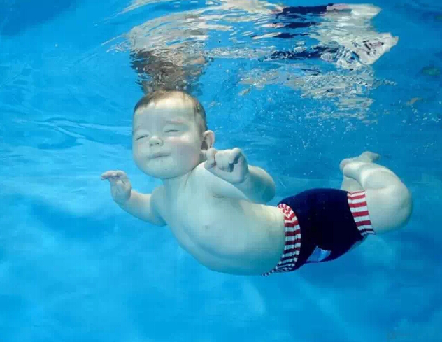
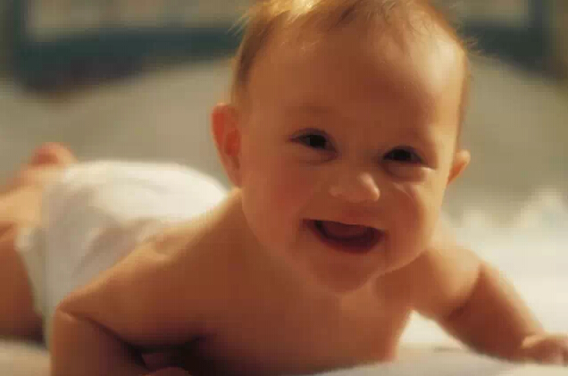
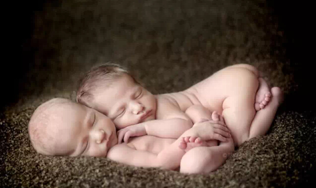

胎儿在你腹中竟然做这些事，孕妈你知道吗？
自从知道自己腹中开始孕育一个小生命的那一刻起，准妈妈就把全部的爱倾注在胎宝宝身上。准妈妈虽然不能看见胎宝宝，但还是时时刻刻关注他的一切：他健康吗？他在做什么呢？其实，在漫长的280天中，胎宝宝大部分时间都用来睡觉。但在醒着的时候，他可是一个精力充沛、调皮好动的小家伙，拥有你想像不到的丰富多彩的娱乐生活：到处游走、打哈欠、玩弄脐带、吸手指、甚至是啃自己的小脚丫......
遨游羊水中

在还不能称为"胎儿"时，他们就开始在妈妈的子宫内四处游动了，这种漫无目的地游动没有什么姿势可言，随心所欲，随遇而安，像只悠闲的小海马。这一"健身"活动从胎宝宝6周大一直持续到怀孕后期，直到他的个头大得不能漂浮在羊水中才算结束。
打哈欠、吮吸和吞咽
准妈妈怀孕11周时，外型开始悄悄地变化，但因为胎宝宝只有一颗李子大，还不足以引起别人的注意，相对而言，腹中的胎宝宝却发生了天大的变化。他的心脏开始向所有内脏器官供血，并通过脐带与胚胎进行血液交换。这是胎宝宝身体成长的重要里程碑，同时他也学会了一些新的本领——打哈欠、吸吮和吞咽。
胎宝宝打哈欠如同我们一样，把嘴张得大大的，但他是不是也是因为困了、累了才打哈欠我们就不得而知了；胎宝宝的营养通过脐带传递，他的吸吮和吞咽显得没有太大意义，托浮着身体的羊水成为他口中进进出出、吞咽玩耍的玩具，或许就像我们吹泡泡那样乐趣无穷吧！
活动筋骨，做鬼脸

在胎宝宝毛发和指甲飞速生长、生殖器开始呈现性别特征的时候，他会做的事情更是让人惊奇：他能自由地移动胳膊，弯曲手指和脚趾，再过两周，宝宝还能弯曲、伸展并转动手掌、手腕、双腿和脚趾，动作变得更灵活；当怀孕后期他的骨头变得越来越硬后，他会常常翻身，乱踢一通，还能握手、张开手，准妈妈会感到宝宝在腰的两边滑动，好像是拥抱着妈妈，在跟妈妈撒娇一样。这都是胎宝宝在活动筋骨、做运动。
胎宝宝继续吸吮和吞咽，除了羊水，又增加了一项新发明——吸吮手指，这真是为宝宝出生后喜爱吸吮手指找到了最初的根源。当然，他还会时不时地摸摸自己的脸蛋。有时，他甚至会把自己的小脚丫扳过来，放在嘴巴里啃来啃去。
此时他的面部表情也丰富了许多，学会微笑、皱眉头，我们可以看作是胎宝宝对周遭环境是否满意的表现，也可以当做是他面部神经肌肉的锻炼，无论怎样我们的宝宝早在这时就学会做鬼脸了，可这时他才刚刚10周大，身长不过6厘米啊！
玩转脐带
除了睡觉，胎宝宝一刻都不安静，准妈妈的子宫内并没有给他提供什么玩具，靠着自娱自乐打发消闲日子。不过有一个"玩具"不得不提，就是脐带。它本是给胎宝宝输送营养的"通道"，实在无聊之极胎宝宝就把它当成了玩具，围着脐带转圈，抓着脐带把玩。玩累了他就歇一歇，精神头儿足了就越玩越起劲，可他不知道危险就潜伏在一边，有些宝宝就在这玩转中被脐带缠绕而发生危险。
耳朵灵灵灵
胎宝宝非常"聪明"，在他24周大时，就已经能分辨出来自子宫外和准妈妈身体内部的不同声音。所以要尽可能和宝宝说话，并试着拍拍肚子，如果能放点优美的音乐就更好了，要知道胎宝宝听到后脉搏会加快，还能随着音乐的节奏而移动呢！
其实，在胎宝宝6个月的时候耳朵就已经很灵敏了，宝宝被超声波"窥探"，他能感觉到超声波探头放在妈妈肚皮上的轻微压力，尽管肚子上的皮肤、羊水起到一定的阻隔作用，但是超声波震动的声音达到宝宝的耳朵里时能接近100分贝，相当于火车进站的声音。所以，这样的噪音宝宝定是不喜欢的。
抢占地盘

胎宝宝越长越大，为了能发育得更好，他在妈妈肚子里开始开拓地盘，该如何开拓呢？胎宝宝自有办法，他把妈妈身体内的器官挤挪了地方，肠子搬家到了上腹部，胃缩小了地盘，正因为这样很多准妈妈才出现了胃部的不适感。
打嗝
胎宝宝会打嗝？听着好像是笑话，但确实是这样，准妈妈在怀孕后期会发现胎宝宝有节奏的胎动，一天会出现好几次。医生从医学角度解释说这是宝宝在吞咽羊水时发出的声音，也是他在"练习"呼吸动作，让肺能快一点发育成熟，所以胎宝宝的打嗝并不是真正意义上的打嗝。
睁眼练习
我们总以为胎宝宝在出生几天后才能睁开眼睛看这个多彩的世界，事实并不是如此，在怀孕后期，胎宝宝的眼睛就能在眼眶里转动，而且他还会主动练习睁眼、闭眼，想像不到吧！
不仅是睁眼锻炼，胎宝宝的五种感觉——嗅、视、听、味、触摸全部"开始工作"，为即将到来的出生做好充分准备。
排出胎便
你知道嘛，当宝宝准备出生的时候，他会将身体上褪下的胎毛和其他分泌物一点点吞下去，储存在肠道中，这些都将刺激胎儿的肠蠕动，排出胎便，还能排出尿液。
300块骨头
从生理课本中我们知道，人的骨骼一共有206块，但胎宝宝的骨头会比成人要多，至少有300块，在出生后部分骨头会随着生长而融合在一起。
胎宝宝在具备了70多种不同的反射能力后就要离开妈妈了，经过这不算漫长的40周，胎宝宝从一个小小胚胎发育成一个健康的婴儿，会笑、能翻滚、可以睁眼看、吞咽吮吸，这期间经历了复杂且不可想象的变化。对于胎宝宝来说，在妈妈肚子里的日子是快乐的，没有烦恼、不用思考；对妈妈来说，这也是人生中最美好的时光，因为胎宝宝给妈妈带来了终身不能忘怀的美好回忆。
胎宝宝在经历过这些小小精彩瞬间后，他已经一步一步地做好了准备，准备蜷缩着身体通过大约23厘米的产道来到这个陌生的世界，准备开始他崭新的生活。